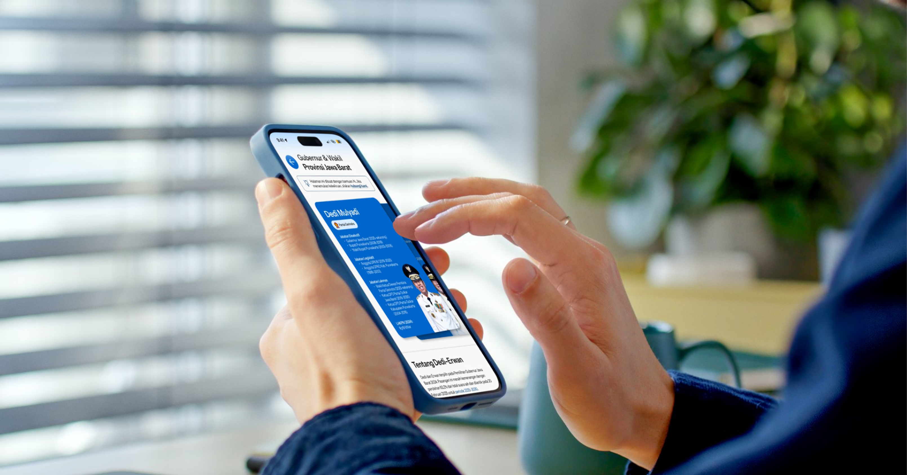
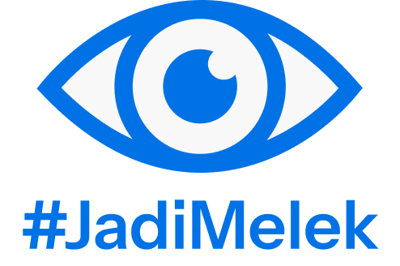
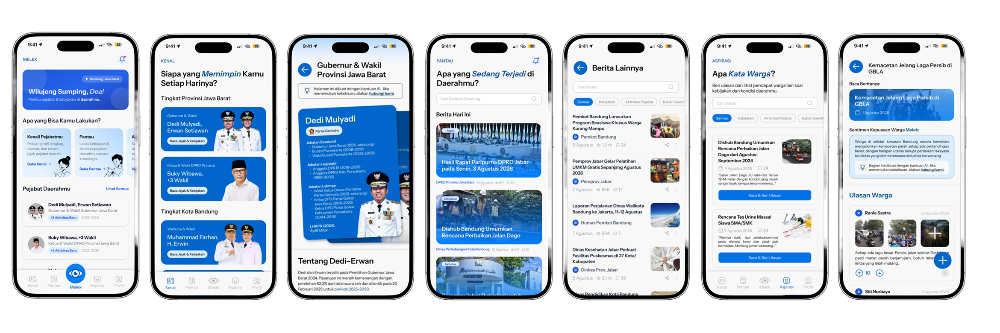

On Being Activists for Users

Introduction
Melek is a digital platform proposal we developed for the Gemastik XIX 2026 competition. The starting point was simple: after Indonesia's 2024 General and Regional Elections were over, public interest in tracking local officials' performance and policies dropped off almost entirely. We wanted to understand what actually makes it so hard for people to follow their own local government—and whether there was a more sensible way to close that gap.

We used the Design Thinking framework (Empathize–Define–Ideate–Prototype–Test) throughout, not as a methodology checkbox, but because we genuinely needed to move back and forth between research and design before committing to any solution.
Empathize
We started with a fairly honest question: why do so many people, even in major cities (even ourselves), not know who represents them in their regional council?
To find out, we spoke with several people, including a civic technology practitioner and co-creator of Bijak Memilih. One thing that stuck with us from that conversation was when she said:
"As designers, we are the activists of the users."
That line wasn't just a nice thing to hear. It was a reminder that civic tech doesn't end once a prototype is done—it carries a real responsibility to genuinely represent people who often have little access or voice in the systems that govern their lives.
Alongside that interview, we surveyed 59 respondents across several cities and provinces in Indonesia. The results confirmed what we suspected:
78%
Didn't know who their local council representative was.
85%
Stopped actively following officials' performance after the election.
72%
Found government information hard to access, with 65% citing a lack of centralization and 58% noting poor local relevance.
To organize this more clearly, we built an Empathy Map from respondents' behavior and language. A few patterns kept showing up:
Says
“I don't even know who my local DPRD member is.”
“Policy information is scattered and the sources aren't clear.”
“I'd rather see something short or visual than read a long article.”
Citizens struggle with basic representation awareness and fragmented policy sources.
Thinks
“Looking up information takes too much effort—it's not worth it.”
“If it's too technical, I'll just skip it.”
Citizens perceive governance tracking as high-effort, jargon-heavy, and not worth the time.
Feels
Overwhelmed by complex, dense information.
Apathetic, feeling like they have no real impact on local issues.
Citizens feel mentally overwhelmed and disconnected from regional policy decisions.
Does
Rarely visits official government websites.
Relies on social media for updates, scrolling past without absorbing details.
Citizens default to fast, passive social media scrolling rather than official portals.
The pattern was clear: it wasn't that people didn't care. It was that the path to credible information felt too far and too tiring to take on a regular basis.
Define
From this research, we narrowed things down to five core problems we wanted to address:
We translated these into a User Persona and a User Journey Map, to make sure every feature we later designed actually addressed a need surfaced by research—not one we assumed on our own.
The guiding questions we kept coming back to during design:
How might we help people recognize their local officials in a simple way?
How might we turn scattered regional policy information into something concise and understandable?
How might we make information relevant to each user's location and needs?
How might we keep people engaged with local issues even after election season has passed?
Ideate

Before jumping into features, we worked out the product's identity first. The name "Melek" means aware, informed, and understanding—in line with the product's goal of making people more aware of their local government. The logo takes the shape of an eye, representing the act of seeing, knowing, and watching, rendered in blue to convey credibility and trust.
To explore ideas, we ran Crazy 8's sketching sessions and grouped our findings with an Affinity Diagram. From that process, we settled on three approaches that became the foundation of Melek's design:
A Regional Focus
Most existing transparency initiatives operate at the national level and only get attention around election time. Melek is built around the actual structure of local government, with ongoing coverage rather than seasonal spikes.
A Local Media Aggregator
Rather than becoming yet another news outlet, Melek pulls together and curates information from existing local sources, so people don't have to search across multiple places on their own.
AI/NLP Support
We use this to turn long, formal documents and news articles into points that are easier to read and understand.
These three ideas came together in four main features: Kenal for officials' profiles and track records, Pantau for a chronological feed of policies and activities, Aspirasi as a space for discussion and citizen reviews, and Location-Based Personalization with timely notifications.
Prototype
We took this from low-fidelity wireframes to an interactive prototype, supported by a design system (colors, Instrument Sans typography, iconography, and components) to keep the interface consistent across every feature.

Test
We evaluated the prototype through a Heuristic Evaluation against Nielsen's ten usability principles, plus two rounds of Usability Testing with participants, conducted asynchronously via Userberry.
In the first round, the prototype scored an SUS of 82 and an NPS of 40, with most tasks completed successfully. Then, in the second round, every task was completed successfully, with the SUS score rising to 83 and the NPS increasing to 80.
Based on feedback, we made three key fixes:
WhatsApp Login
Added a WhatsApp login option for faster and more accessible authentication.
Manual Location Update
Added a dedicated page allowing users to manually set and adjust their location.
Review Reporting
Added a way for users to report reviews and comments considered inappropriate.
Takeaways
Even though testing showed clear progress in usability, Melek didn't make it to the finals of Gemastik XIX 2026.
That outcome taught us something important: testing a solution for usability alone isn't enough. Before getting to that stage, we needed to interrogate the problem space itself far more detail—whether the problem we identified genuinely called for a new app, or could have been answered in a way that fit more closely into habits people already had. Questions like that should be asked earlier and in more depth, rather than assumed away simply because the team already had a solution direction it was excited to build.
This process reminded us that good research isn't just about gathering data to justify an idea we've already committed to—it's about the discipline to keep checking whether the direction we're taking actually comes from what users need, or from our own assumptions about what a solution "should" look like. But hey, still it was fun.